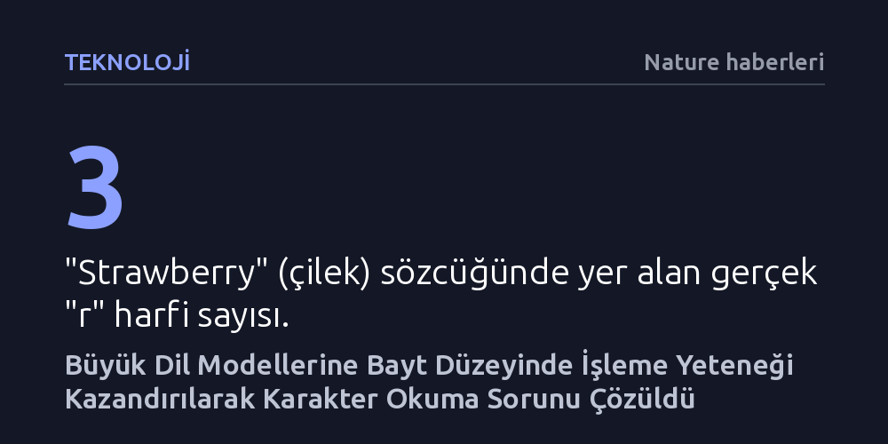

TEKNOLOJI · Nature haberleri · 2026-10-08
Araştırmacılar, standart dil modellerini bayt düzeyinde çalışacak biçimde uyarlayan yeni bir yöntem geliştirdi. Bu yaklaşım sayesinde modeller genel performanslarını kaybetmeden kelimelerin içindeki harfleri tek tek okuyup doğru sayabiliyor.
Büyük dil modellerinin harf sayma gibi temel görünen görevlerdeki yetersizliğinin kalıcı bir mimari kusur olmadığını, mevcut modeller sıfırdan eğitilmeden de bu sınırın aşılabileceğini gösteriyor.

Büyük dil modelleri karmaşık akıl yürütme adımlarını veya binlerce satırlık yazılım kodlarını başarıyla üretebilirken, İngilizce çilek anlamına gelen "strawberry" sözcüğünde kaç tane "r" harfi olduğu sorulduğunda sıklıkla çuvallıyor ve iki cevabını veriyor. Kullanıcıların sıkça karşılaştığı ve bir zeka geriliği gibi algılanan bu durum, aslında modellerin metinleri harf harf değil, "token" adı verilen harf öbekleri ve kelime parçaları halinde işlemesinden kaynaklanıyor.
Tokenleştirme mimarisi, modellerin devasa veri kümelerini yüksek hesaplama verimliliğiyle öğrenmesini sağlasa da kelimeleri oluşturan tekil karakterlere doğrudan erişimi engelliyor. Modeller kelimeleri ikili sayı dizileri biçiminde kodlanan baytlar düzeyinde göremediği için, sözcüğün anlamsal bağlamına bütünüyle hakim olsalar bile içerisindeki harfleri sayma veya karakter tabanlı ayrıştırma yapma görevlerinde başarısız oluyor.
Nature dergisinde yayımlanan çalışmasında Minixhofer ve araştırma ekibi, token tabanlı modellerin bu temel eksikliğini gidermek amacıyla "byteification" (baytlaştırma) adını verdikleri yeni bir yaklaşım ortaya koydu. Bu yöntem, önceden token temelli olarak eğitilmiş büyük dil modellerini sonradan uyarlayarak doğrudan bayt düzeyinde işlem yapabilecek hale getiriyor.
Geliştirilen tekniğin en dikkat çekici tarafı, devasa maliyetlerle sıfırdan yeni bir model eğitme zorunluluğunu ortadan kaldırmasıdır. Araştırmacılar var olan mimarileri geriye dönük olarak uyarlayarak, modellerin hem metinleri en temel ikili kodlama birimi olan baytlar seviyesinde okumasını sağladı hem de önceden kazanılmış üst düzey dil becerilerinin korunmasını mümkün kıldı.
Araştırma sonuçları, baytlaştırılmış modellerin genel dil yeteneklerinde token tabanlı emsalleriyle rekabet edebilir seviyede kaldığını, buna karşılık karakter düzeyindeki görevlerde belirgin bir üstünlük sergilediğini kanıtlıyor. Model, "yapay zeka" anlamına gelen "artificial intelligence" ifadesindeki "i" harflerini hatasız biçimde sayarak yapısal körlüğünü aştığını gösteriyor.
Bu yaklaşım, yapay zekanın sadece harf sayma gibi basit bulmacalarda değil; yazım denetimi, anagram çözümü, heceleme ve diller arası morfolojik analiz gibi karakter duyarlılığı gerektiren alanlarda çok daha güvenilir hale gelmesini sağlıyor. Modeller artık kavramların anlamsal yükü ile onları oluşturan fiziksel metin dizilimi arasında bir kopukluk yaşamıyor.
Çalışmanın ortaya koyduğu en temel kazanım, dil modellerindeki kronik mimari sınırlılıkların her zaman sıfırdan devasa eğitim süreçleri gerektirmediğidir. Önceden eğitilmiş mevcut modellerin akıllı uyarlama yöntemleriyle dönüştürülebilmesi, yapay zeka mühendisliğinde hem zaman hem de milyonlarca dolarlık hesaplama maliyeti tasarrufu anlamına geliyor.
Bununla birlikte, bayt düzeyinde işlem yapmanın girdi dizisi uzunluğunu artırması nedeniyle hesaplama yükü üzerindeki uzun vadeli etkilerinin ve pratik uygulamalardaki sınırlarının yakından izlenmesi gerekiyor. Yine de baytlaştırma, modellerin dünyayı algılama biçimindeki en temel kör noktalardan birini kapatarak yapay zekanın metinsel kavrayışını daha tutarlı bir temele oturtuyor.